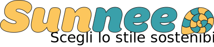
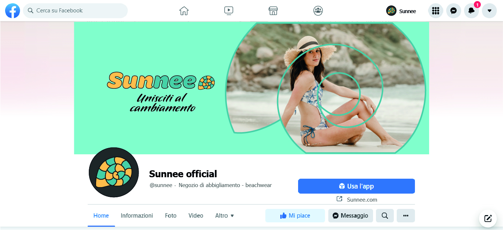
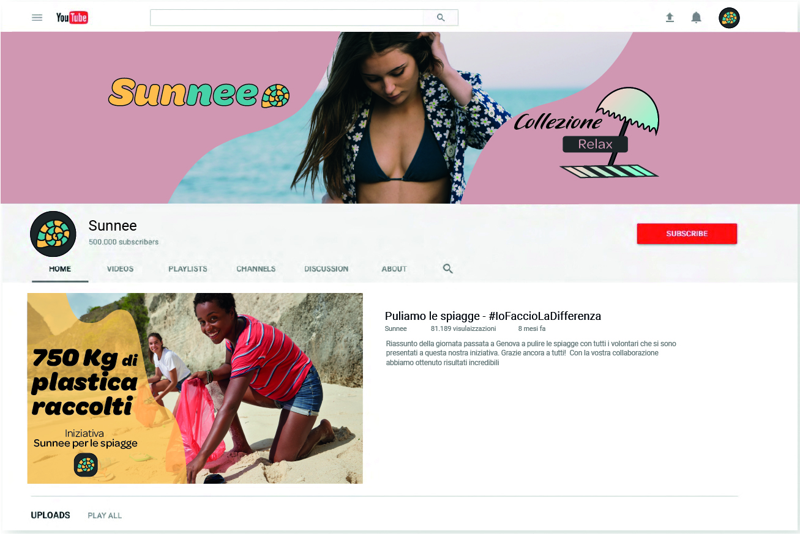

Il marchio
Ho deciso di prediligere un approccio audace che dia subito visibilità, optando per un logo colorato e che non passa inosservato.
- Pittogramma: rimarca il legame con il mare attraverso la figura della conchiglia.
- Logotipo: il font dalle linee tondeggianti richiama il divertimento tipico dell'estate e la linea morbida delle onde. In più conferisce carattere al brand rendendolo distingubile a colpo d'occchio dai concorrenti.
- Payoff: richiama la scelta sostenibile dell'azienda e lo stile hand-written conferisce uno stile più amichevole al brand.
Black & white
Palette
#FFC65C
#FFE4B1
#D5A6A4
#EFD9CB
#3AA0AA
#85CFD5
#333333
#F2F2F2
Ho selezionato questa palette scegliendo come colore principale il giallo ocra, a richiamare il sole, la spiaggia e l'energia. Per dare più dinamicità ho affiancato un colore blu vagamente tendente al verde, che invece richiama il mare. Per completare la palette ho scelto un rosa, che richiama i tramonti e la felicità
Tipografia
Thin Italic, Light, Medium, Black italic
Regular
Come carattere tipografico ho optato per 2 font: Omnes e P22 Pooper Black. Il primo serve per testi e citazioni, il secondo invece per i titoli e il payoff.
Icone
Questo primo set è stato creato per un fine decorativo, richiamando il mare
Questo primo set è stato creato in un ottica di utilità, con funzionalità più mirate all'e-commerce
Grafiche social
Ultima parte del progetto consisteva nel determinare una strategia social. In particolare erano da impostare il profilo aziendale di Facebook e YouTube e impostare le grafiche per 3 post su facebook e instagram
Profilo Facebook
Profilo YouTube
Post social
Il primo post doveva riguardare la presentazione dell'azienda
Il secondo post doveva riguardare la un invito ad un evento. Io ho scelto di creare un evento di raccolta plastica sulle spiagge italiane, cosi da dimostrare lo spirito attivo del brand nel voler fare la differenza
Il primo post doveva riguardare la presentazione di un servizio/prodotto